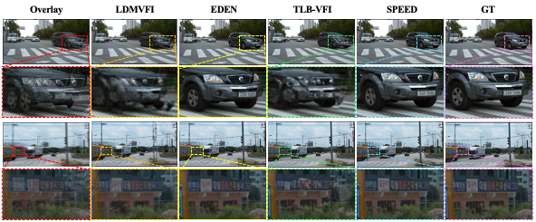
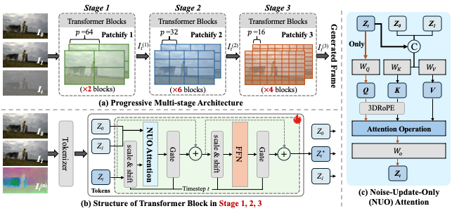
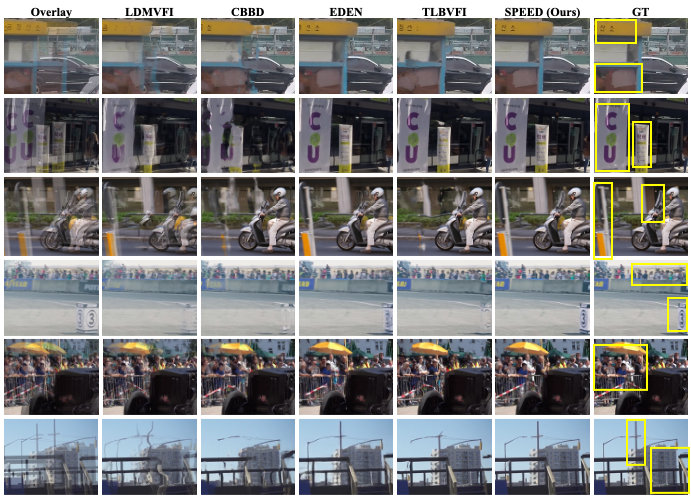

ACM MM 2026
SPEED
A PyTorch framework for high-quality video frame interpolation.
1Fudan University 2Bilibili Inc
*Equal contribution. †Corresponding author.

ACM MM 2026
A PyTorch framework for high-quality video frame interpolation.
1Fudan University 2Bilibili Inc
*Equal contribution. †Corresponding author.

Video frame interpolation aims to synthesize intermediate frames from two endpoint frames. SPEED is an efficient frame interpolation framework built with a pyramid DiT-style architecture. The model conditions on the start and end frames, predicts the intermediate frame directly, and is trained with pixel-level and perceptual objectives. The released implementation supports training, evaluation, image-pair inference, and sequential or batched video interpolation.

SPEED uses endpoint frames as conditions and predicts the intermediate RGB frame with a pyramid transformer backbone.


The repository provides scripts for model training, evaluation, and inference. Image-pair inference and
video interpolation are supported through inference.py. Video interpolation can run in
parallel mode for higher throughput or sequential mode for lower memory usage.
python inference.py \
--config configs/eval_config.yaml \
--pretrained_path checkpoints/speed.pt \
--frame0 examples/frame_0.png \
--frame1 examples/frame_1.png \
--output interpolation_outputs/interpolated.png \
--precision bf16@inproceedings{zhang2026speed,
title={SPEED},
author={Zhang, Zihao and Zhao, Haoyu and Yang, Siqian and Wu, Yidi and Jiang, Yudong and Wu, Zuxuan},
booktitle={Proceedings of the ACM International Conference on Multimedia},
year={2026}
}